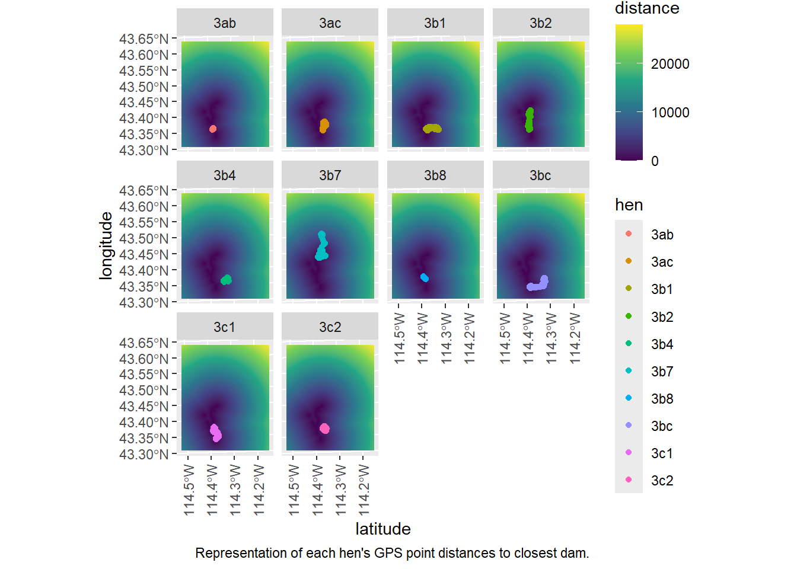

Chapter 6 Let’s Plot!
Finally, after endless lines of code, we are ready to visualize the data that we’ve worked so hard to clean. In this chapter, we will plot the brooding hen GPS points that we isolated from the larger data set in chapter 3. Remember, each of these GPS points was taken at a 1-hour interval from the time of nest hatch to the final brood survey date for each individual hen. These points will be plotted against the beaver dam map that was created at the end of chapter 4, which is a heat map that shows each 30m pixel’s distance to the closest measured dam (any dam status).
6.1 Load Packages and Data
First, we’ll load the necessary packages and data. The star package in this chapter is ggplot2, which provides R users with very intuitive functions to aid in plotting data. Then, we must load our “distance to dam” map as well as our brooding hen data set.
# load packages
library(ggplot2)
library(terra)
library(sf)
library(tidyterra)
library(viridis)
## load data ----
# convert distance to dam plot to a data frame
all_dist <- rast("../../../../MS Work/Analyses/processed_data/all_dam_distance.tiff") %>%
rename(distance = last)
all_dist_df <- as.data.frame(all_dist, xy = TRUE)
# convert brooding hen data set to sf object
b_hens <- read.csv("../../../../MS Work/Analyses/processed_data/brooding_hens.csv") %>% dplyr::select(-X)
b_hens_sf <- st_as_sf(b_hens, coords = c("x_", "y_"), crs = 32611)6.2 Visualize the Data
And now, the final step. There are many functions within the ggplot2 package. Here I will break down all of the ones used to create these plots.
- geom_raster is used to plot raster data stored as a data frame. Within this function, we specify the data input and aesthetics for the data once plotted.
- labs allows us to adjust the labels of the plot, including the x and y axes, and a plot caption.
- theme lets us manipulate details about label display.
- geom_sf is similar to geom_raster except for plotting sf_object data.
- scale_fill_viridis_c is a function for assigning color scales to the displayed data.
- facet_wrap allows us to separate this data from one all-encompassing plot into individual plots by brooding hen.
## create plot ----
ggplot() +
geom_raster(data = all_dist_df,
mapping = aes(x = x,
y = y,
fill = distance)) +
labs(x = "latitude",
y = "longitude",
caption = "Representation of each hen's GPS point distances to closest dam.") +
theme(axis.text.x = element_text(angle = 90, vjust = 0.5, hjust = 1)) +
geom_sf(data = b_hens_sf,
mapping = aes(color = hen)) +
scale_fill_viridis_c() +
facet_wrap(~ hen)
Now we have a visual of how the brooding hens from the 2024 season were moving around the landscape with respect to beaver dam presence. There is quite a bit of variation between each hen’s movements, with some of them utilizing areas closer to beaver dams than others. The big question is – at this landscape-scale, are there underlying reasons for the hens using this specific valley as opposed to one right next door? Further data collection and analysis is needed to address that question.
Thank you and please come again.